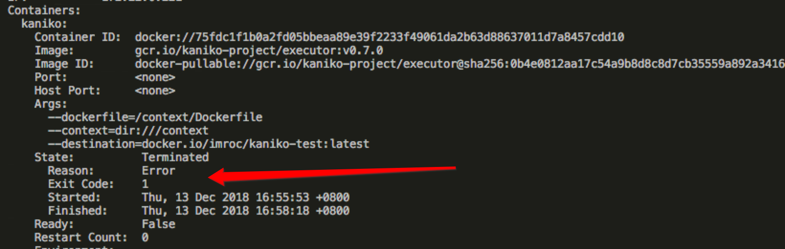

分析 ExitCode 定位程序退出原因
使用 kubectl describe pod 查看异常的 pod 的状态，在容器列表里看 State 字段，其中 ExitCode 即程序退出时的状态码，正常退出时为0。如果不为0，表示异常退出，我们可以分析下原因。

退出状态码的区间
- 必须在 0-255 之间
- 0 表示正常退出
- 外界中断将程序退出的时候状态码区间在 129-255，(操作系统给程序发送中断信号，比如
kill -9是SIGKILL，ctrl+c是SIGINT) - 一般程序自身原因导致的异常退出状态区间在 1-128 (这只是一般约定，程序如果一定要用129-255的状态码也是可以的)
假如写代码指定的退出状态码时不在 0-255 之间，例如: exit(-1)，这时会自动做一个转换，最终呈现的状态码还是会在 0-255 之间。我们把状态码记为 code
- 当指定的退出时状态码为负数，那么转换公式如下:
256 - (|code| % 256)
- 当指定的退出时状态码为正数，那么转换公式如下:
code % 256
常见异常状态码
137
- 此状态码一般是因为 pod 中容器内存达到了它的资源限制(
resources.limits)，一般是内存溢出(OOM)，CPU达到限制只需要不分时间片给程序就可以。因为限制资源是通过 linux 的 cgroup 实现的，所以 cgroup 会将此容器强制杀掉，类似于kill -9 - 还可能是宿主机本身资源不够用了(OOM)，内核会选取一些进程杀掉来释放内存
不管是 cgroup 限制杀掉进程还是因为节点机器本身资源不够导致进程死掉，都可以从系统日志中找到记录:
ubuntu 的系统日志在
/var/log/syslog，centos 的系统日志在/var/log/messages，都可以用journalctl -k来查看系统日志
- 此状态码一般是因为 pod 中容器内存达到了它的资源限制(
1 和 255
- 这种可能是一般错误，具体错误原因只能看容器日志，因为很多程序员写异常退出时习惯用
exit(1)或exit(-1)，-1 会根据转换规则转成 255
- 这种可能是一般错误，具体错误原因只能看容器日志，因为很多程序员写异常退出时习惯用
状态码参考
这里罗列了一些状态码的含义：Appendix E. Exit Codes With Special Meanings
Linux 标准中断信号
Linux 程序被外界中断时会发送中断信号，程序退出时的状态码就是中断信号值加上 128 得到的，比如 SIGKILL 的中断信号值为 9，那么程序退出状态码就为 9+128=137。以下是标准信号值参考：
Signal Value Action Comment
──────────────────────────────────────────────────────────────────────
SIGHUP 1 Term Hangup detected on controlling terminal
or death of controlling process
SIGINT 2 Term Interrupt from keyboard
SIGQUIT 3 Core Quit from keyboard
SIGILL 4 Core Illegal Instruction
SIGABRT 6 Core Abort signal from abort(3)
SIGFPE 8 Core Floating-point exception
SIGKILL 9 Term Kill signal
SIGSEGV 11 Core Invalid memory reference
SIGPIPE 13 Term Broken pipe: write to pipe with no
readers; see pipe(7)
SIGALRM 14 Term Timer signal from alarm(2)
SIGTERM 15 Term Termination signal
SIGUSR1 30,10,16 Term User-defined signal 1
SIGUSR2 31,12,17 Term User-defined signal 2
SIGCHLD 20,17,18 Ign Child stopped or terminated
SIGCONT 19,18,25 Cont Continue if stopped
SIGSTOP 17,19,23 Stop Stop process
SIGTSTP 18,20,24 Stop Stop typed at terminal
SIGTTIN 21,21,26 Stop Terminal input for background process
SIGTTOU 22,22,27 Stop Terminal output for background process
C/C++ 退出状态码
/usr/include/sysexits.h 试图将退出状态码标准化(仅限 C/C++):
#define EX_OK 0 /* successful termination */
#define EX__BASE 64 /* base value for error messages */
#define EX_USAGE 64 /* command line usage error */
#define EX_DATAERR 65 /* data format error */
#define EX_NOINPUT 66 /* cannot open input */
#define EX_NOUSER 67 /* addressee unknown */
#define EX_NOHOST 68 /* host name unknown */
#define EX_UNAVAILABLE 69 /* service unavailable */
#define EX_SOFTWARE 70 /* internal software error */
#define EX_OSERR 71 /* system error (e.g., can't fork) */
#define EX_OSFILE 72 /* critical OS file missing */
#define EX_CANTCREAT 73 /* can't create (user) output file */
#define EX_IOERR 74 /* input/output error */
#define EX_TEMPFAIL 75 /* temp failure; user is invited to retry */
#define EX_PROTOCOL 76 /* remote error in protocol */
#define EX_NOPERM 77 /* permission denied */
#define EX_CONFIG 78 /* configuration error */
#define EX__MAX 78 /* maximum listed value */